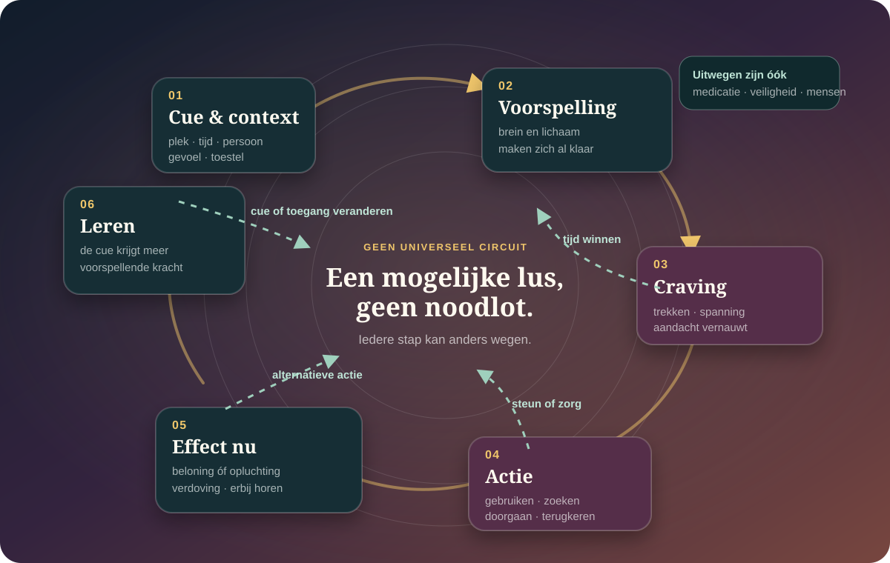

De kern in gewone taal
Verslaving is geen gebrek aan karakter. Het is ook geen enkel dopaminedefect.
Verlangen, leren, lichamelijke aanpassing, stress, beschikbare alternatieven en leefomstandigheden kunnen elkaar versterken. Bij de ene persoon weegt cue-gestuurd zoeken zwaar, bij de andere ontwenning, pijn, eenzaamheid, impulsiviteit of onmiddellijke opluchting. Daarom bestaat er geen universele verslavingslus — en ook geen universele uitweg.
Het kan intens, lichamelijk en aandachtvernauwend voelen zonder de volgende actie volledig te bepalen.
Tolerantie en ontwenning kunnen bestaan zonder verlies van controle; verslaving kan ook bestaan zonder sterke fysieke ontwenning.
Medicatie, steun, veiligheid, afstand, behandeling en betere leefvoorwaarden kunnen allemaal echte schakels zijn.
Vier woorden die vaak ten onrechte door elkaar lopen.
Gebruik
Iets nemen of doen
Dat zegt op zichzelf nog niets over schade, controle of diagnose.
Craving
Sterke drang
Een subjectief verlangen dat door cues, stemming, ontwenning of verwachting kan worden uitgelokt.
Lichamelijke afhankelijkheid
Aanpassing
Tolerantie of ontwenning na herhaald gebruik. Dat kan ook ontstaan bij correct voorgeschreven medicatie.
Verslavingsstoornis
Patroon met schade
Een klinisch beoordeeld patroon van onder meer controleverlies, prioriteit, gevolgen en volhouden ondanks schade.
Geen diagnose op afstand: frequentie alleen beslist niet. Middel, dosis, gevolgen, context, controle, functioneren en veiligheid horen samen beoordeeld te worden.
Craving begint soms al vóór je bewust hebt besloten.
Een plek, uur, persoon, geur, beeld, lichaamstoestand of toestel kan een geleerde voorspelling activeren. Aandacht vernauwt, het lichaam maakt zich klaar en de mogelijke uitkomst voelt dichterbij. Daarna kan gebruik plezier geven — maar even vaak gaat het later vooral over opluchting, verdoving, functioneren of ontwenning vermijden.

Craving kan voelen als een steeds smaller wordende kamer: andere doelen bestaan nog, maar zijn tijdelijk minder bereikbaar. Dat maakt de ervaring begrijpelijker — niet onvermijdelijk.
Je kunt iets willen dat je nauwelijks nog lekker vindt.
In dieronderzoek kan dopamine de aantrekkingskracht van een beloningscue versterken zonder de plezierreactie even sterk te vergroten. Dat onderscheid tussen wanting en liking helpt verklaren waarom verwachting en zoeken kunnen blijven trekken wanneer de ervaring zelf teleurstelt.
Te simpel
“Verslaving is te veel dopamine.”
Dopamine werkt via meerdere routes en doet mee aan leren, motivatie en beweging. Stresssystemen, glutamaat, opioïde signalering, lichaam, geheugen en omgeving doen eveneens mee.
Ook te simpel
“Als je niet geniet, wil je het niet echt.”
Zoeken kan sterker worden dan genieten. Gebruik kan bovendien verschuiven van beloning zoeken naar ongemak of ontwenning vermijden.
Open de volledige route Willen ≠ genieten → · Bekijk het causale rattenonderzoek →
Verslaving kan gewoonteachtig worden — maar “de keuze is uitgeschakeld” is geen volledige theorie.
Herhaalde context-actieverbindingen kunnen gedrag sneller en minder deliberatief maken. Toch blijft menselijk gedrag vaak gevoelig voor prijs, beschikbaarheid, sociale gevolgen, verwachtingen en onmiddellijke alternatieven. Onderzoekers discussiëren daarom over hoeveel verslaving door gewoonte, dwang, doelgericht kiezen of een vernauwd waardelandschap wordt gedragen.
Het gewoonteperspectief ziet iets echts
Oude cues kunnen een route snel activeren; stress en cognitieve belasting kunnen doelgerichte controle bemoeilijken.
De tegenstem ziet óók iets echts
Gedrag kan doelgericht blijven, maar een onmiddellijke uitkomst — opluchting, functioneren of ontwenning vermijden — krijgt tijdelijk veel meer gewicht dan latere schade.
Tolerantie en ontwenning zijn verschillende processen met verschillende risico’s.
Hetzelfde effect vraagt soms meer
Hersenen en lichaam kunnen zich aanpassen. Tolerantie ontwikkelt niet voor elk effect even snel en zegt niet alleen hoe “sterk” iemand is.
Stoppen verandert de toestand
Klachten verschillen sterk per stof, dosis, duur en lichaam. Ze kunnen psychisch, autonoom, neurologisch of lichamelijk zijn.
Tolerantie kan weer dalen
Na een periode zonder opioïden kan een vroegere dosis gevaarlijker worden. Veiligheidsplanning en medische begeleiding kunnen levens redden.
Belangrijke veiligheidsgrens: abrupt stoppen met alcohol of benzodiazepinen kan bij afhankelijkheid gevaarlijk zijn en onder meer insulten of delirium uitlokken. Bespreek afbouwen of ontwenning met een arts; maak er geen thuistest van.
Stress kan gebruik aantrekkelijker maken, maar de wereld bouwt mee aan wat bereikbaar voelt.
Van beloning naar opluchting
Pijn, slapeloosheid, angst, somberheid en ontwenning kunnen de onmiddellijke waarde van gebruik vergroten. Dat is geen bewijs dat iedere verslaving uit trauma ontstaat.
Steun én besmetting
Mensen kunnen veiligheid, betekenis en praktische hulp bieden. Sociale normen, conflicten of een gebruikende omgeving kunnen dezelfde lus juist versterken.
Beschikbaarheid bepaalt gedrag mee
Prijs, reclame, voorschrijfpraktijken, woononzekerheid, armoede, criminalisering en toegang tot zorg verdelen risico en herstelruimte ongelijk.
Cues worden soms industrieel gemaakt
Variabele beloning, frictieloze toegang, pushmeldingen en eindeloze feeds kunnen herhaling uitlokken. Dat maakt intens gebruik nog niet automatisch een klinische verslaving.
Een omgeving veranderen is geen zwaktebod. Soms is het de meest biologische interventie die er bestaat: minder cue, meer tijd, een ander lichaamssignaal, een andere volgende stap.
Wat als verslaving tegelijk een breinverandering, een geleerd verlangen, een keuze onder druk en een sociaal verhaal is?
Deze denkers vormen geen nieuwe canon. Ze stellen verschillende vragen, gebruiken ander bewijs en botsen soms rechtstreeks. Precies dat maakt ze bruikbaar: niet om één winnaar te kiezen, maar om te zien wat ieder model zichtbaar én onzichtbaar maakt.
Motivatie & neurowetenschap
Kent Berridge
Brengt: het onderscheid tussen wanting en liking. Een cue kan sterk trekken zonder dat de uitkomst nog plezierig wordt verwacht.
Grens: incentive salience is een mechanisme, geen volledige verklaring van iemands geschiedenis, keuze of herstel.
Breinziektemodel
Nora Volkow
Brengt: verslaving als chronische, behandelbare hersenstoornis met biologische, ontwikkelings- én sociale componenten. Dat hielp het morele-falenmodel terugdringen.
Grens: “breinziekte” kan deterministisch klinken en woonst, armoede, strafbeleid en beschikbare alternatieven naar de achtergrond duwen.
Leren & ontwikkeling
Marc Lewis
Brengt: hersenverandering als intens geleerd en ontwikkelend verlangen, niet automatisch als ziekte. Dezelfde plasticiteit die een patroon vormt, kan ook verandering dragen.
Grens: “geleerd” betekent niet licht, vrijwillig of makkelijk afleerbaar; een medisch kader kan toegang tot zorg en bescherming bieden.
Filosofie & klinische ethiek
Hanna Pickard
Brengt: responsibility without blame. Handelingsruimte serieus nemen zonder schaamte, vijandigheid of straf als behandeling te verkopen.
Grens: handelingsruimte is ongelijk en contextgevoelig. Haar idee mag nooit betekenen dat zorg wordt ingetrokken wanneer verandering niet lukt.
Herstelwetenschap
Katie Witkiewitz
Brengt: herstel als een dynamisch proces van gezondheid, functioneren, betekenis en levenskwaliteit. Minder schade of minder gebruik kan een echte uitkomst zijn, niet alleen “mislukte abstinentie”.
Grens: veel van dit onderzoek gaat over alcohol; doelen en veiligheidsgrenzen verschillen bij opioïden, benzodiazepinen en andere middelen.
Geschiedenis, psychiatrie & ervaring
Carl Erik Fisher
Brengt: de lange slinger tussen zonde, keuze, ziekte en herstel. Als verslavingspsychiater én persoon in herstel laat hij zien dat definities ook door tijd, macht en cultuur worden gemaakt.
Grens: een historische en persoonlijke synthese verrijkt het beeld, maar bewijst geen afzonderlijk neurobiologisch mechanisme.
Laat ze botsen
De interessantste vraag is niet: wie heeft gelijk?
Alcohol, nicotine, opioïden, stimulantia, gokken en gamen delen processen — niet één identiek ziektebeeld.
Farmacologie, intoxicatie, ontwenning en lichamelijke schade verschillen sterk. “Een drug is een drug” is medisch onvoldoende precies.
Gokstoornis en gamestoornis hebben formele diagnostische kaders. Veel schermgebruik, shoppen, seks of sporten is niet door frequentie alleen een stoornis.
Lichamelijke afhankelijkheid van voorgeschreven medicatie is niet automatisch verslaving. Stop of wijzig medicatie niet op basis van deze pagina.
Een diagnose beschrijft een patroon, geen identiteit. Mensen kunnen herstellen, hervallen, schade beperken en verschillende doelen kiezen.
Goede zorg behandelt niet alleen het middel, maar ook de functie en de omstandigheden.
Afhankelijk van de stof en persoon kan behandeling medicatie, gesprekstherapie, contingency management, medische opvolging, lotgenotensteun, sociale hulp en schadebeperking combineren. Voor opioïdverslaving verlagen methadon en buprenorfine het sterfterisico tijdens behandeling. Bij alcohol- en nicotineproblemen bestaan eveneens bewezen medicamenteuze opties. Keuze, contra-indicaties en doel horen bij een bevoegde behandelaar.
Maak het veiliger
Overdoserisico, menggebruik, rijden, zwangerschap, ontwenning en lichamelijke problemen eerst.
Begrijp de functie
Wat geeft het nu: plezier, rust, slaap, verbinding, energie, verdoving of het voorkomen van ontwenning?
Vergroot echte alternatieven
Niet alleen “nee” zeggen, maar toegang, tijd, mensen, behandeling en haalbare volgende acties organiseren.
Leer van terugkeer
Een terugval is klinische informatie over cues en steunbehoefte — geen bewijs dat verandering onmogelijk is.
Minder risico, naloxon, niet alleen gebruiken, steriel materiaal, geen middelen mengen en medische controle kunnen betekenisvolle doelen zijn, ook wanneer stoppen vandaag niet haalbaar of niet gekozen is.
Een diabetesmiddel, digitale cues en een oude behandeling onder een nieuwe loep.
De nieuwe studies zijn interessant, maar klein, vroeg of observationeel. Ze veranderen onderzoeksvragen sneller dan behandelrichtlijnen.
Semaglutide verlaagde enkele alcoholuitkomsten.
Deelnemers dronken minder in een laboratoriumtaak en rapporteerden minder craving en minder drankjes per drinkdag. Gemiddelde drankjes per dag en het aantal drinkdagen veranderden niet aantoonbaar.
Lees de primaire studie →De belangrijkste rookuitkomsten bleven negatief.
Semaglutide verminderde craving en gewicht, maar niet de vooraf gekozen primaire maten voor rookweerstand en sigaretten per dag. Eén mechanisme is geen universele verslavingsknop.
Lees de primaire studie →Zelfs een inlogscherm kan geleerd verlangen oproepen.
In preregistreerde, diagnostisch gevalideerde groepen hing problematisch internetgebruik samen met meer cue-reactiviteit, urge en craving — ook bij algemenere toestelcues. Dit is samenhang, geen bewijs dat ieder toestel verslavend is.
Lees de primaire studie →Buprenorfine-naloxon hing samen met minder sterfte.
In een grote retrospectieve studie gingen behandelperioden samen met lagere sterfte en meer remissie. De omvang is belangrijk; het observationele ontwerp bewijst op zichzelf geen causaliteit.
Lees de primaire studie →Wat zou ons meer overtuigen?
Grotere, langere en beter vergelijkende studies.
- Voor GLP-1-middelen: klinische eindpunten, diverse groepen, langere follow-up en vergelijking met bestaande behandeling.
- Voor digitale verslaving: gedrag door de tijd, objectieve gebruiksdata en experimentele verandering van cues.
- Voor hersenmetingen: minder omgekeerde conclusies uit scans en meer koppeling aan betekenisvolle uitkomsten.
- Voor herstel: sterfte, kwaliteit van leven, wonen, relaties en functioneren — niet alleen abstinentiedagen.
Hulpgrens
Bij niet reageren of trage, vreemde ademhaling: bel 112.
Blijf bij de persoon. Gebruik naloxon wanneer een opioïdoverdosis mogelijk is, het beschikbaar is en je weet hoe. Wacht bij ernstige verwardheid, een insult, hallucinaties of snelle lichamelijke achteruitgang niet af. Wie dagelijks veel alcohol drinkt of benzodiazepinen gebruikt, laat stoppen of afbouwen medisch begeleiden.
Ook zonder spoed is hulp passend wanneer gebruik meer ruimte inneemt dan je wilt, afspraken of relaties aantast, riskant wordt, je zonder het middel niet meer goed functioneert of eerdere stoppogingen vastlopen. Een huisarts, verslavingsarts of gespecialiseerde dienst kan samen met jou doelen en risico’s beoordelen.
Een mechanisme is nog geen levensverhaal.
In het Denkstuk De vriendin die bleef toen ik beter wist krijgt verslaving de stem van een relatie die eerst troost en later ruimte inneemt. Dat is persoonlijke ervaring, geen universeel verloop — en precies daarom een andere, waardevolle lens dan een circuitmodel.
Waarop dit dossier steunt.
- Causaal dieronderzoek · 2013Peciña & Berridge — Dopamine amplifies cue-triggered wanting
Ondersteunt het onderscheid tussen cue-gestuurd willen en plezierreactie.
- Hedendaagse motivatietheorie · 2023Berridge — Separating desire from prediction of outcome value
Waarom verlangen zich kan losmaken van herinnerd of verwacht plezier.
- Breinziektemodel · 2016Volkow, Koob & McLellan — Neurobiologic advances from the brain disease model
Invloedrijke medische positionering van verslaving als behandelbare hersenstoornis.
- Tegenmodel · 2018Lewis — Brain change in addiction as learning, not disease
Hersenverandering gelezen als ontwikkeling en leren, met eigen beperkingen.
- Filosofische tegenstem · 2020Pickard — What we’re not talking about when we talk about addiction
Kritiek op zowel het morele model als een volledig compulsief breinziektemodel.
- Herstelmodel · 2025Witkiewitz & Tucker — Whole person recovery
Een dynamisch ecologisch model waarin functioneren, context en levenskwaliteit meetellen.
- Historische synthese · 2022Fisher — The Urge: Our History of Addiction
Geschiedenis van verslavingsideeën verweven met psychiatrische en persoonlijke ervaring.
- Menselijk leeronderzoek · 2009Tricomi, Balleine & O’Doherty — A specific role for posterior dorsolateral striatum in human habit learning
Een fMRI-experiment naar menselijke gewoontevorming; geen totaalverklaring van verslaving.
- Na overdosis · cohort · 2018Larochelle e.a. — Medication for opioid use disorder after nonfatal overdose
Methadon en buprenorfine hingen samen met lagere sterfte na een niet-fatale overdosis.
- Opioïdzorg · cohort · 2024Comparative effectiveness of buprenorphine-naloxone treatment pathways
Grote observationele studie bij 221.967 mensen; associaties, geen gerandomiseerd causaliteitsbewijs.
- Alcohol · fase-2-RCT · 2025Hendershot e.a. — Once-weekly semaglutide in adults with alcohol use disorder
Vroege positieve signalen op enkele alcohol- en cravingmaten bij 48 deelnemers.
- Alcohol · RCT · 2025McDonell e.a. — Contingency management for alcohol use disorders
Onderzocht hoe biologische alcoholmetingen aan gedragsmatige bekrachtiging gekoppeld kunnen worden.
- Problematisch internetgebruik · 2025Antons e.a. — Cue reactivity towards distal cues
Preregistered onderzoek met 536 deelnemers en een 14-daagse natuurlijke meting.
- Internetgaming · fMRI · 2025Lei e.a. — Imbalanced goal-directed and habitual control
Kleine studie naar modelgebaseerde en gewoonteachtige controle; interessante associatie, geen diagnose-instrument.
- Roken · fase-2a-RCT · 2026Semaglutide for smoking-related outcomes
Zeer kleine studie met negatieve primaire rookuitkomsten en positieve secundaire signalen.
- Klinische richtlijn · 2024Canadian national guideline for opioid use disorder — update 2024
Actuele richtlijn over buprenorfine, methadon, behandelkeuze en veiligheidsgrenzen.
- Alcoholontwenning · WHOWHO — Management of alcohol withdrawal
Onderbouwt medische begeleiding en preventie van insulten en delirium bij risicovolle ontwenning.
Lees ook het Atlas-kompas en ons bronnenbeleid.